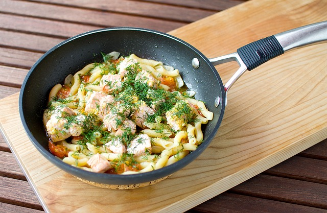

Home
Pasta with Salmon and Peas

Photo by Bruno Bissig on Pixabay
Description
"Make this salmon pasta in under 20 minutes for a dinner the whole family
can enjoy. Kids will love the fun-shaped pasta while packing in fibre and
omega-3"
Recipe by
Caroline Hire
Ingredients
- 240g wholewheat fusilli
- knob of butter
- 1 large shallot, finely chopped
- 140g frozen peas
- 2 skinless salmon fillets, cut into chunks
- 140g low-fat creme fraiche
- half a low-salt vegetable stock cube
- small bunch of chives, snipped
Steps
-
Bring a pan of water to the boil and cook the fusilli according to the
pack instructions.
-
Meanwhile, heat a knob of butter in a saucepan, then add the shallot
and cook for 5 mins or until softened.
-
Add the peas, salmon, creme fraiche and 50ml water. Crumble in the
stock cube.
-
Cook for 3-4 mins until cooked through, stir in the chives and some
black pepper. Then stir through to coat the pasta. Serve in bowls.